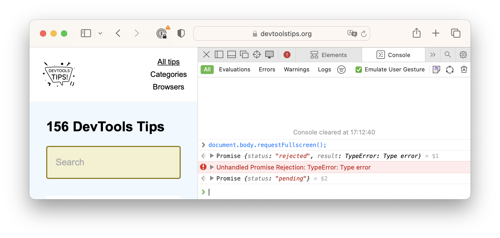
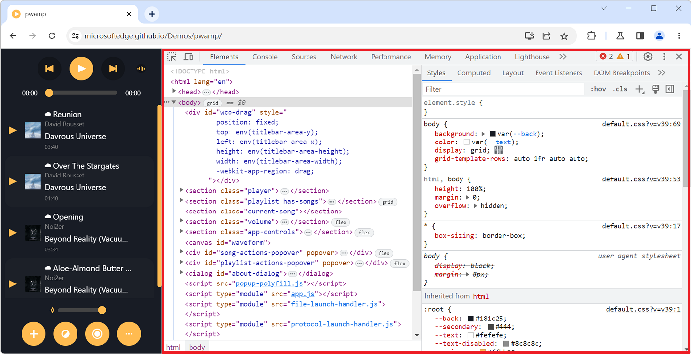
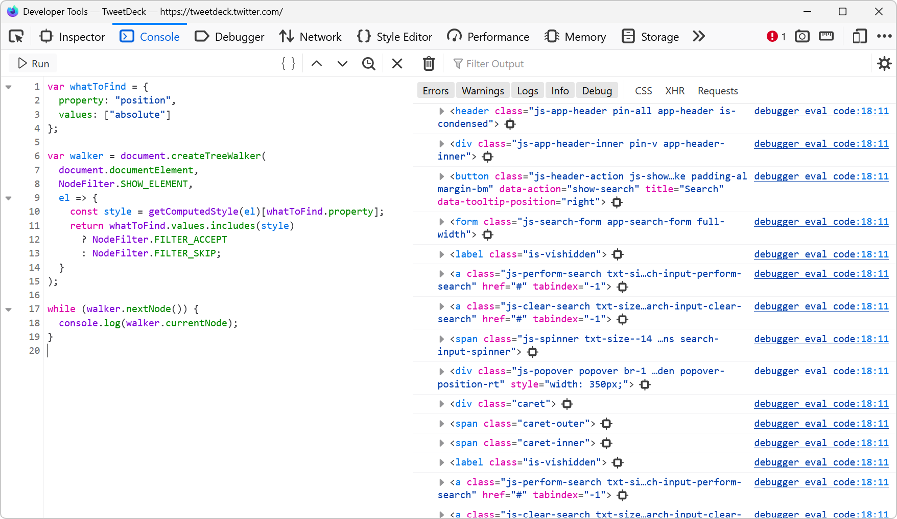
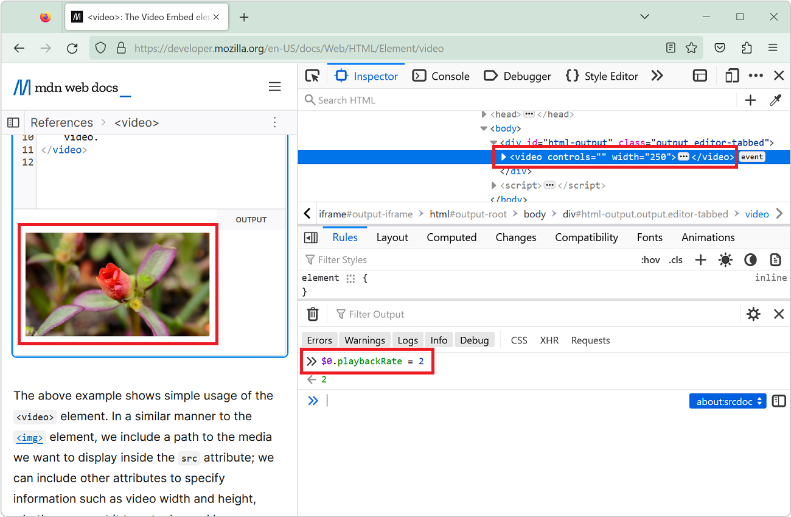
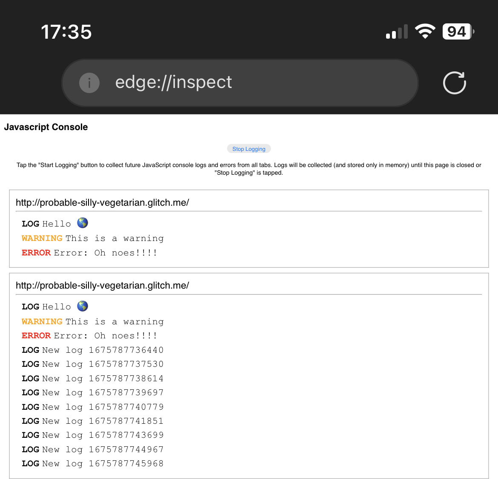
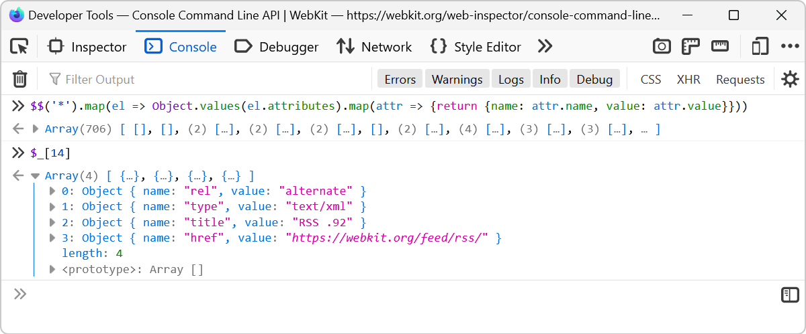
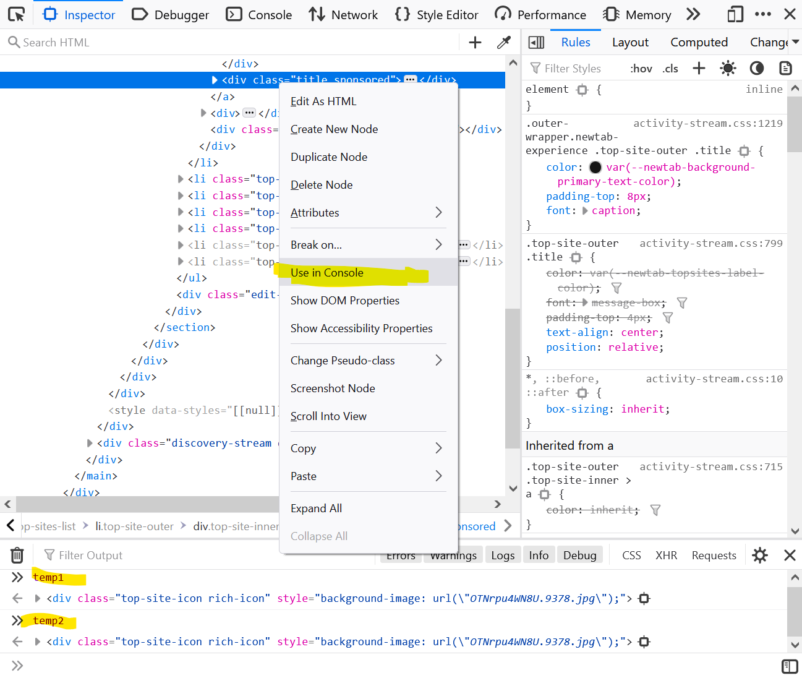
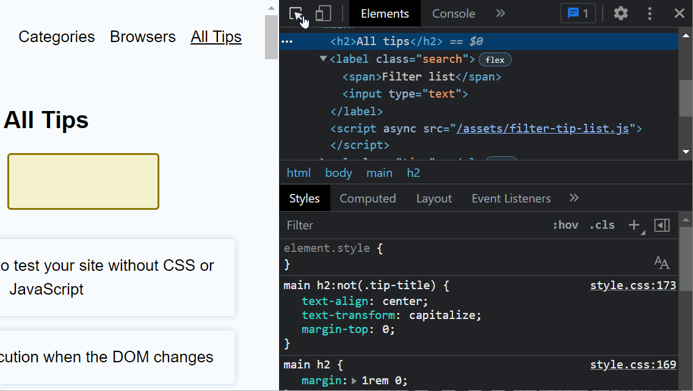

29 Console tips
-
Explain console errors by using artificial intelligence
 Edge DevTools lets use the Microsoft Copilot AI assistant to explain errors and warnings in the Console tool. Console errors can sometimes be hard to understand and fix. The large language models that... Read moreCategories: Supported by:
Edge DevTools lets use the Microsoft Copilot AI assistant to explain errors and warnings in the Console tool. Console errors can sometimes be hard to understand and fix. The large language models that... Read moreCategories: Supported by: -
List all event listeners on the entire page
 When you don't know a codebase, it might be hard to know where to get started, and what events are being listened to by which elements. The Console tool, in Chromium-based browsers, comes with a nice... Read more
When you don't know a codebase, it might be hard to know where to get started, and what events are being listened to by which elements. The Console tool, in Chromium-based browsers, comes with a nice... Read more -
Use user gesture restricted APIs in the Console

Certain web APIs are user gesture restricted. This means that they can only be called as a result of a user action, such as in a click event handler. For example, you can't simply put yout website in... Read more
-
Understand when the Console opens in the main panel and in the drawer

Have you noticed how the Console tool is sometimes displayed in a top-level tab (just like all other tools), and sometimes in a split pane at the bottom, below the main tool? If you've been confused b... Read more
-
Find all elements with a specific style

Let's say you want to list all of the elements on a page that are absolutely positioned. Or maybe you want to find all of the elements that use CSS grid. How would you do that? One way is to run a few... Read more
-
Customize the columns shown in console.table
 The console.table method is great for displaying tabular data in the console, but what if the objects your're logging contain a lot of properties, causing a lot of columns to appear in the console? Fo... Read more
The console.table method is great for displaying tabular data in the console, but what if the objects your're logging contain a lot of properties, causing a lot of columns to appear in the console? Fo... Read more -
Speed up or slow down a video

You can speed up or slow down a video on a website by using the playbackRate property of the video element. This can be very useful for when the website makes it tricky to do this in the UI! Open Dev... Read more
-
View console logs from non-Safari browsers on an iPhone

Using the about:inspect special page you can see your website's logs in Chrome or Edge running on iPhone! This is important because debugging a webpage that's running in Safari on an iPhone isn't hard... Read more
-
List all supported console functions
 You've probably already used console.log() in your code to print debugging values to the Console tool in DevTools. But the console namespace actually has many other functions too! To list them all, op... Read more
You've probably already used console.log() in your code to print debugging values to the Console tool in DevTools. But the console namespace actually has many other functions too! To list them all, op... Read more -
Access results from recent Console evaluations

Imagine you evaluate a long expression like $$('*').map(el => Object.values(el.attributes).map(attr => {return {name: attr.name, value: attr.value}})) which extracts the attributes from all of t... Read more
-
Get the recently selected DOM nodes in the console
 If you type $0 in the Console tool, in any browser, the currently selected DOM node is returned. This is very handy. To learn more, check Get the selected element in the console. On top of this, in Ed... Read more
If you type $0 in the Console tool, in any browser, the currently selected DOM node is returned. This is very handy. To learn more, check Get the selected element in the console. On top of this, in Ed... Read more -
Use document.designMode to spell check your webpage
 Amelia Bellamy-Royds shared a really cool tip to spell-check a webpage's content from DevTools: Open DevTools, and go to the Console tool. Type document.designMode = "on" and press Enter. C... Read more
Amelia Bellamy-Royds shared a really cool tip to spell-check a webpage's content from DevTools: Open DevTools, and go to the Console tool. Type document.designMode = "on" and press Enter. C... Read more -
Quickly reference React components in the console
 Zee shared a great tip on Twitter if you are working with React and have the React DevTools extension installed. You can use $r in the Console tool to reference the currently selected element in the R... Read more
Zee shared a great tip on Twitter if you are working with React and have the React DevTools extension installed. You can use $r in the Console tool to reference the currently selected element in the R... Read more -
console.log() is great, but do you know console.table()? console.group()? console.assert()?
 You probably know about console.log() already, it's a great way to print variables and objects to the console while the code is running, to debug it. But there are other console methods that can help... Read more
You probably know about console.log() already, it's a great way to print variables and objects to the console while the code is running, to debug it. But there are other console methods that can help... Read more -
Detect the element with focus at any time
 If you want to know which element has the focus on the web page at any time, you can use a live expression in the Console tool. Open the Console. Click the Create live expression button (it looks lik... Read more
If you want to know which element has the focus on the web page at any time, you can use a live expression in the Console tool. Open the Console. Click the Create live expression button (it looks lik... Read more -
Query object instances and holders from the console
 All browser DevTools have a few built-in functions in the console to do things like get the current element, or copy a string. But Safari exposes 2 nice built-in functions: queryInstances queryHolder... Read moreCategories: Supported by:
All browser DevTools have a few built-in functions in the console to do things like get the current element, or copy a string. But Safari exposes 2 nice built-in functions: queryInstances queryHolder... Read moreCategories: Supported by: -
Write code on multiple lines in the Console
 If you're feeling adventurous and want to write longer pieces of code in the Console to execute more complex things, it can quickly become difficult. Thankfully, there are a few ways to make your life... Read more
If you're feeling adventurous and want to write longer pieces of code in the Console to execute more complex things, it can quickly become difficult. Thankfully, there are a few ways to make your life... Read more -
Automatically logging name and value in console.log()
 Using the console of DevTools you can to log some information to debug your JavaScript. The common way to do that is to add a console.log() statement where you want to learn the value of a certain var... Read more
Using the console of DevTools you can to log some information to debug your JavaScript. The common way to do that is to add a console.log() statement where you want to learn the value of a certain var... Read more -
Format console messages
 You can use special formatters in the console.log function to format logs just the way you want. Use %s to format a variable as a string. Use %d to format a variable as an integer. Use %f to format a... Read more
You can use special formatters in the console.log function to format logs just the way you want. Use %s to format a variable as a string. Use %d to format a variable as an integer. Use %f to format a... Read more -
Store a node as a variable to use it in the console

If you want to use a DOM node from the page in the console: Right-click the node in the Elements (or Inspector in Firefox). Click on Store as global variable (or Use in Console in Firefox). The Cons... Read more
-
Monitor all events dispatched on an element

You can use the monitorEvents global function in the Console panel to log all of the events dispatched on a particular element. Select an element in the Elements panel. Go to the Console. Type monito... Read more
-
Prototype content changes with designMode
 When creating or modifying a design prototype for the web, you may want to quickly edit content in the browser without having to find the relevant code. When you turn on designMode for the document or... Read more
When creating or modifying a design prototype for the web, you may want to quickly edit content in the browser without having to find the relevant code. When you turn on designMode for the document or... Read more -
Apply CSS styles to console messages
 The console.log output can be styled in DevTools using CSS. console.log('%c Hello World', 'color: orange; font-size: 2em;');... Read more
The console.log output can be styled in DevTools using CSS. console.log('%c Hello World', 'color: orange; font-size: 2em;');... Read more -
Find all images without alternative text
 With HTML, you can add alternative text to images using the alt attribute. It can be used to add a text description to images, which is extremely useful for accessibility as some people may not be abl... Read more
With HTML, you can add alternative text to images using the alt attribute. It can be used to add a text description to images, which is extremely useful for accessibility as some people may not be abl... Read more -
Find DOM elements from the console
 $ and $$ are 2 functions you can use in the console to find elements in the page. They are essentially shortcuts to the longer document.querySelector() and document.querySelectorAll() functions, but $... Read more
$ and $$ are 2 functions you can use in the console to find elements in the page. They are essentially shortcuts to the longer document.querySelector() and document.querySelectorAll() functions, but $... Read more -
Persist console messages across page navigations and reloads
 By default, the messages displayed in the console get removed as soon as you refresh the page (or navigate to a new page). If you want to keep those messages as long as DevTools is open, follow these... Read more
By default, the messages displayed in the console get removed as soon as you refresh the page (or navigate to a new page). If you want to keep those messages as long as DevTools is open, follow these... Read more -
Copy an object from the console
 The console panel supports a very handy copy() function that stringifies and copies anything you pass to it as an argument, so you can then paste it somewhere else. For example: copy($$('a').map(a =&g... Read more
The console panel supports a very handy copy() function that stringifies and copies anything you pass to it as an argument, so you can then paste it somewhere else. For example: copy($$('a').map(a =&g... Read more -
Get the selected element in the console
 If you selected an element in the Elements panel (in Chrome, Safari, Polypane or Edge) or the Inspector panel (in Firefox), you can refer to it in the console using $0. This shortcut will return the D... Read more
If you selected an element in the Elements panel (in Chrome, Safari, Polypane or Edge) or the Inspector panel (in Firefox), you can refer to it in the console using $0. This shortcut will return the D... Read more -
View performance markers in order
 When logging performance.timing events to the console, they appear in alphabetical order since they are properties of the PerformanceTiming object. In order to view them in order, you can use console.... Read more
When logging performance.timing events to the console, they appear in alphabetical order since they are properties of the PerformanceTiming object. In order to view them in order, you can use console.... Read more
 edge
edge
 chrome
chrome
 safari
safari
 firefox
firefox
 polypane
polypane